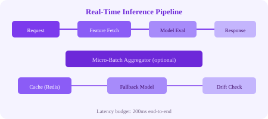

Real-time inference requires an optimized pipeline that delivers predictions within strict latency budgets. Every millisecond counts.
# End-to-end inference flow (fraud detection example)
1. Client sends transaction data (REST/gRPC)
2. API Gateway: authenticate, validate, rate-limit
3. Feature fetch: lookup user features from online feature store (Redis)
4. Feature computation: compute real-time features (tx amount vs avg, location match)
5. Cache check: has this exact transaction been scored recently?
6. Model inference: run ensemble of 3 XGBoost models (50ms budget)
7. Post-processing: apply business rules (amount > 10K → force review)
8. Response: return fraud_score + explanation + action
9. Async: log to Kafka for monitoring, feedback collectionMicro-batching groups individual inference requests into small batches to improve GPU utilization and throughput, at the cost of some latency.
# Micro-batching server logic
Incoming requests go into a queue
Every 10ms (or when queue reaches 32 requests):
Pop all requests from queue
Stack them into a batch tensor
Run model inference on the batch (GPU)
Map results back to individual responses
Return responses
Latency added: avg 5ms (half of 10ms window)
Throughput increase: 3-5x for small LLMsA complete real-time fraud detection system illustrates all the patterns:
| Component | Technology | Latency Budget |
|---|---|---|
| API Gateway | Kong / Envoy | 5ms |
| Feature fetch | Redis (Feature Store) | 15ms |
| Feature computation | In-app computation | 20ms |
| Cache lookup | Redis | 5ms |
| Model inference (3 models) | Triton (XGBoost) | 100ms (parallel) |
| Post-processing & rules | In-app | 10ms |
| Kafka logging | Async (non-blocking) | 0ms added |
| Total (p99) | ~160ms ✅ |